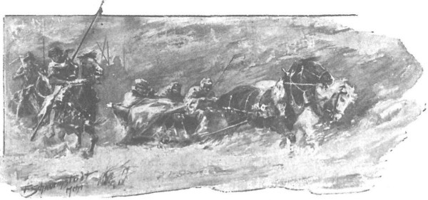

Sau những ngày tuyết rơi dày đặc là những ngày giá băng ghê gớm, rồi đến những ngày trời đẹp nắng khô. Ban ngày, những khu rừng già như lấp lánh, long lanh trong ánh mặt trời, băng đóng gông dòng sông và bịt kín bãi lầy. Rồi đến những đêm sáng trời, khi giá băng mạnh lên đến độ cây cối nứt tanh tách thành tiếng động ồn ã trong rừng; chim chóc tụ lại gần chỗ có nhà cửa; đường sá trở nên nguy hiểm vì lũ chó sói tụ họp từng đàn, tấn công không chỉ những người đi lễ mà dám vào cả làng mạc. Còn người dân thì túm tụm với nhau bên những đống lửa, trong những túp lều ám khói, bàn chuyện sẽ có vụ mùa bội thu sau tiết đông băng giá, và vui vẻ chờ những ngày lễ thánh đang đến gần. Lâm cung của quận chúa vắng dần. Quận chúa cùng đám cung nhân và linh mục Wyszoniek đã rời lâm cung đi đến thành Ciechanow. Zbyszko đã khỏe hơn, nhưng vẫn chưa đủ sức để ngồi lên lưng ngựa, ở lại lâm cung cùng với gia nhân của chàng, với gã Sanderus, với chàng hộ vệ người Séc và đám người hầu địa phương, do một nữ quý tộc cai quản.
Tâm hồn chàng hiệp sĩ sục sôi nhớ người vợ trẻ. Mặc dù chàng vẫn có ý nghĩ ngọt ngào vô hạn rằng Danusia là của chàng, và không một sức mạnh trần thế nào có thể cướp nàng đi được, nhưng chính ý nghĩ ấy càng khiến cho nỗi thương nhớ nàng thêm nung nấu. Suốt bao ngày, chàng chỉ những thở dài trông ngóng phút giây được rời bỏ lâm cung, cân nhắc xem lúc ấy nên làm gì, nên đi đâu và làm sao để chinh phục lòng ông Jurand. Nhiều khi lòng chàng chợt cồn lên một nỗi lo lắng nặng nề, nhưng nói chung chàng vẫn thấy tương lai đầy vui sướng. Được yêu Danusia và được cướp những chiếc mũ có ngù lông công cho nàng - đó sẽ là cuộc sống của chàng. Bao lần chàng những muốn được chia sẻ điều đó với chàng trai người Séc mà chàng rất quý mến, nhưng nghĩ rằng chàng ta gắn bó hết lòng với Jagienka, sẽ không vui vẻ gì khi nghe nói đến Danusia, vả chàng còn bị ràng buộc bởi điều cần giữ kín nên không thể tâm sự mọi chuyện đã xảy ra.
Mỗi ngày qua, sức khỏe chàng một khá hơn. Một tuần trước đêm giáng sinh, lần đầu tiên chàng lại ngồi thử trên lưng ngựa, và tuy cảm thấy chưa đủ sức mặc áo giáp để lên yên, chàng vẫn thấy vô cùng phấn chấn. Vả lại chàng vẫn nghĩ rằng trong thời gian trước mắt chưa có việc gì cần phải mặc áo giáp sắt và đội mũ chiến, còn nếu cần, chỉ vài ngày nữa thôi, chàng vẫn đủ sức làm việc đó. Để giết thì giờ, chàng tập nâng kiếm ở trong phòng, và việc đó chàng thực hiện cũng không đến nỗi nào. Rìu thì với sức chàng còn hơi quá nặng, nhưng chàng nghĩ rằng nếu cầm cán rìu bằng cả hai tay thì đã có thể sử dụng khá hiệu quả.
Rốt cuộc, hai ngày trước đêm giáng sinh, chàng ra lệnh chuẩn bị xe, thắng yên cương ngựa và bảo cho chàng trai người Séc biết là sẽ lên đường tới thành Ciechanow. Chàng giám mã trung thành hơi lo ngại, nhất là khi thấy ngoài trời vẫn giá băng ngăn ngắt, nhưng Zbyszko bảo:
- Không phải việc ngươi phải lo, Glowacz (chàng gọi tên gã trai theo kiểu Ba Lan như thế). Chúng ta chẳng còn việc quái gì nữa ở lâm cung này, mà nếu ta có bị đau lại chăng nữa, thì ở Ciechanow cũng chẳng thiếu gì thuốc chữa. Mà nói cho cùng, ta đâu có cưỡi ngựa, ta ngồi trong xe trượt, dưới tấm da che, phủ rơm tận cằm, đến gần Ciechanow mới phải lên ngựa cơ mà.
Và chàng làm đúng thế. Đã quá hiểu chủ, chàng trai Séc biết rằng không nên chống lại ý muốn của chủ, và nếu không thực hiện nhanh chóng lệnh đó thì lại càng tệ hơn, vì thế chỉ một tiếng đồng hồ sau họ đã có thể lên đường. Lúc xuất phát, trông thấy gã Sanderus mang cả hòm xiểng của gã chất lên xe, Zbyszko hỏi:
- Này, sao ngươi cứ bám nhằng nhẵng lấy ta như quả ké bám vào lông cừu thế, hả?… Ngươi bảo muốn đi sang đất Phổ kia mà?
- Dạ, tôi có nói là muốn sang đất Phổ, - Sanderus biện bạch, - nhưng một thân một mình thì đi sao được trong tuyết lạnh nhường này? Lũ sói sẽ xơi thịt tôi trước khi vì sao đầu tiên hiện trên trời, mà ở lại đây thì cũng chẳng biết làm gì nữa. Thôi thì vào thành phố góp sức hun đúc lòng mộ đạo của người ta là hơn, chia sẻ những món hàng thiêng liêng này với họ, cứu họ khỏi nanh vuốt loài ma quỷ, đúng như lời tôi đã từng thề nguyền với Đức Thánh Cha của dân Ki-tô ở thành Roma. Hơn nữa, tôi đã trót quá yêu quý ngài hiệp sĩ mất rồi, nên đâu thể rời xa ngài cho đến khi lên đường trở lại Roma lần nữa, biết đâu có thể hiến cho ngài chút công tích nào chăng.
- Thưa chủ nhân, bao giờ gã chẳng sẵn sàng ăn uống theo chúng ta. - Chàng trai Séc bảo. - Thứ công tích ấy thì gã sẵn sàng thực hiện hơn cả. Nếu có đàn sói nào quá ư lớn tấn công ta trong vùng rừng Prasnysz, ta nên quẳng gã làm mồi xua chúng, bởi chúng chẳng thích món gì hơn thịt gã đâu.
- Này, ngươi coi chừng không khéo lời có tội kia dính tịt vào ria mép ngươi đấy, - Sanderus trả miếng, - mà cái nhũ băng thế kia thì họa là trong lửa hỏa ngục mới tan chảy nổi mà thôi.
- Ôi! - Chàng Glowacz bất giác đưa tay phải lên sờ hàng ria mép đang nhú. - Đến chỗ nghỉ chân, ta sẽ thử dùng bia sưởi xem sao, nhưng chẳng cho nhà ngươi đâu mà hòng.
- Thế mà lời răn của Chúa lại là: hãy cho kẻ khát uống! Lại thêm một tội lỗi nữa!
- Vậy thì ta sẽ cho ngươi một thùng nước, còn tạm thời hãy dùng tạm thứ mà ta đang có trong tay.
Nói đoạn, chàng lấy hai tay vốc đầy một vốc tuyết ném vào Sanderus, gã né tránh và bảo:
- Ở Ciechanow ngươi chẳng giở thêm được trò gì nữa đâu, ở đó đã có một con gấu được huấn luyện, biết ném tuyết cừ hơn kia.
Hai người cứ trêu nhau như vậy, bởi cả hai cũng khá thích nhau. Zbyszko không cần Sanderus đi theo, nhưng con người kỳ quặc ấy khiến chàng vui vui, và quả thật chàng cũng thấy khá gắn bó với gã. Thế là vào buổi sáng đẹp trời, họ rời khỏi tòa lâm cung giữa lúc giá rét căm căm, rét đến độ phải dùng chăn phủ cho ngựa. Đất trời chìm trong màn tuyết dày. Những mái lều như chìm hẳn trong tuyết, đôi nơi khói như bốc lên từ dưới những cồn tuyết trắng, bay thẳng lên trời, rực hồng trong ánh rạng đông, bên trên làn khói xòe nở rộng ra, trông hệt như một chiếc ngù lông trên mũ hiệp sĩ.
Zbyszko đi bằng xe trượt, trước hết là để giữ sức, hai nữa vì trời quá giá lạnh, tốt hơn cả là nên giấu mình dưới lượt rơm trải ấm áp và dưới những tấm da phủ trên xe. Chàng cũng bảo cả Glowacz ngồi lên xe với mình, sẵn sàng cung nỏ để đối phó với lũ sói, rồi cả hai vui vẻ chuyện trò.

Họ rời khỏi tòa lâm cung giữa lúc giá rét căm căm
- Đến Prasnysz, - chàng bảo, - ta sẽ cho ngựa nghỉ, sưởi ấm chút đỉnh rồi sẽ đi tiếp.
- Đi đến tận Ciechanow chứ ạ?
- Trước hết hẵng đến Ciechanow để được chào quận công và quận chúa, rồi dự lễ giáng sinh dã.
- Còn sau đó? - Glowacz hỏi.
Zbyszko mỉm cười đáp:
- Sau đó, biết đâu ta lại chẳng trở về Bogdaniec.
Chàng trai người Séc ngạc nhiên nhìn chủ. Trong đầu thoáng ý nghĩ có lẽ cậu chủ trẻ đã từ bỏ tiểu thư Jurandówna, chàng thấy rất có khả năng, bởi nàng cũng vừa ra đi, mà hồi ở lâm cung chàng đã nghe người ta bàn tán rằng trang chủ Spychow không nhận chàng hiệp sĩ trẻ làm rể. Và thế là anh chàng giám mã chân thật thấy lòng hớn hở, bởi tuy mến mộ Jagienka, nhưng nhìn cô chủ như ngắm một vì sao xa trên trời cao, chàng sẵn sàng đổ máu để đánh đổi lấy niềm hạnh phúc cho cô. Chàng cũng yêu mến Zbyszko và hết lòng khao khát được phụng sự cả hai người cho đến tàn hơi.
- Thế thì nhất định lần này cậu chủ sẽ ở lại trang trại! - Chàng sung sướng thốt lên.
- Ta ở lại trang trại sao được khi đã thách đấu với bọn hiệp sĩ Thánh chiến, trước hết là với thằng cha Lichtenstein? - Zbyszko nói. “ Hiệp sĩ de Lorche bảo rằng viên đại thống lĩnh sắp mời đức vua ta đến Toruń phó hội, ta sẽ bám theo đoàn tùy tùng của đức vua. Ta tin rằng ở Toruń, hiệp sĩ Zawisza xứ Garbów hoặc hiệp sĩ Powała xứ Taczew sẽ xin đức vua cho phép ta được đấu nhau với bọn thầy tu kia cho ra khoai ra ngô. Chắc hẳn bọn chúng sẽ tham chiến cùng với đám giám mã, vậy là cả ngươi cũng sẽ có dịp choảng nhau đấy.
- Nếu không được thế, tôi thà cam chịu làm thầy tu! - Chàng Séc nói.
Zbyszko hài lòng nhìn chàng.
- Vậy thì thật đáng thương cho kẻ nào rơi vào dưới gươm giáo của ngươi. Chúa Giêsu đã ban cho ngươi một sức khỏe thật khủng khiếp, nhưng nếu ngươi sử dụng quá mức thì chẳng hay đâu, bởi một giám mã chân chính bao giờ cũng nên biết kiềm chế.
Chàng trai Séc gật gù ra hiệu sẽ không phung phí sức lực nhưng cũng chẳng tiếc sức với bọn Đức, còn Zbyszko thì vẫn tiếp tục mỉm cười, nhưng lần này không phải cười với chàng giám mã nữa mà với những ý nghĩ của chính mình.
- Hẳn trang chủ sẽ hài lòng lắm khi chúng ta trở về, - lát sau Glowacz nói, - cả bên trang Zgorzelice hẳn cũng sẽ rất vui.
Hình ảnh Jagienka lại chợt hiện ra trước mắt Zbyszko, như thể cô đang ngồi bên chàng trên xe trượt. Bao giờ cũng thế, mỗi khi nghĩ về cô, chàng lại thấy cô hiển hiện rất đỗi rõ ràng…
“Không!” Chàng tự nhủ thầm. “Nàng chẳng vui đâu nếu ta trở lại Bogdaniec cùng Danusia, còn nàng phải lấy người khác.” Thoáng qua trước mắt chàng gương mặt của gã Wilk trang Brzozowa và gã Cztan trang Rogowo, thốt nhiên chàng thấy lòng chợt đau khi nghĩ rằng cô gái sẽ có thể rơi vào tay một trong hai kẻ ấy. “Thà nàng tìm một kẻ nào khác còn hơn,” chàng nhủ thầm trong dạ, “chứ bọn kia chỉ là lũ nát rượu và ham cờ bạc, không xứng với một thiếu nữ chân thật như nàng.”
Chàng cũng thầm nghĩ rằng, khi biết được điều vừa xảy ra, hẳn thúc phụ chàng cũng phiền lòng lắm, nhưng rồi chàng lại tự an ủi với ý nghĩ: trước tiên, bao giờ ông Maćko cũng chỉ quan tâm đến nòi giống và sự giàu có phong lưu có thể nâng cao địa vị gia tộc mà thôi. Dẫu Jagienka có gần gũi hơn, là hàng xóm láng giềng chỉ cách một bờ rào, nhưng ông Jurand dẫu sao vẫn là trang chủ hùng mạnh hơn hẳn ông Zych trang Zgorzelice, vì thế chắc hẳn ông Maćko sẽ chẳng nhăn nhó lâu đâu về mối lương duyên của chàng, hơn nữa ông biết quá rõ tình yêu của đứa cháu trai, biết rõ nó mang ơn cứu mạng của Danusia… Ông có ca cẩm gì chăng nữa thì rồi cũng sẽ vui sướng và bắt đầu yêu thương Danusia như con đẻ mà thôi!
Và đột nhiên trong trái tim Zbyszko chợt run lên niềm gắn bó và nhớ nhung ông chú, một người tuy tính tình chai đá nhưng vẫn yêu thương chàng như con ngươi trong mắt. Trong chiến trận bao giờ ông cũng lo che chở chàng hơn lo cho bản thân, ông kiếm chiến lợi phẩm là vì chàng, và cũng vì chàng mà ông chăm chăm tích lũy sản nghiệp. Hai chú cháu chàng cô đơn trên cõi đời này! Chẳng có người thân nào nữa, ngoài những họ hàng xa xôi như cha tu viện trưởng. Vì vậy, những khi phải xa nhau, thiếu người này người kia chẳng biết nên làm gì, nhất là ông chú già, người chẳng ham muốn gì cho bản thân mình nữa!
“Hey! Chú sẽ vui, vui lắm!” Zbyszko thầm nhắc đi nhắc lại trong lòng. “Chỉ cầu sao cho hiệp sĩ Jurand đón ta cũng nhiệt thành như thúc phụ đón ta.”
Chàng cố hình dung xem ông Jurand sẽ nói gì, làm gì khi hay tin đám cưới. Trong ý nghĩ ấy có phần e sợ, nhưng không nhiều lắm, chính là vì chuyện đã rồi. Ông Jurand chẳng thể thách chàng quyết đấu, mà nếu như ông có cương quyết phản đối, thì Zbyszko sẽ nói với ông thế này: “Xin ngài hãy thuận lòng khi tôi cầu xin, vì quyền của ngài đối với Danusia là quyền thế nhân, còn quyền của tôi là quyền do Chúa ban cho. Bây giờ nàng không còn là của ngài nữa, mà đã thuộc về tôi rồi, thưa ngài!”
Hồi nào đó, chàng đã từng nghe một tu sĩ rất thông thuộc Kinh Thánh bảo rằng đàn bà con gái sẽ phải từ giã mẹ cha mà theo chồng, nên giờ chàng thấy mình làm phải. Song chàng không nghĩ là giữa chàng và ông Jurand sẽ xảy ra sự bất đồng và căng thẳng quá đáng, bởi chàng tin rằng những lời cầu xin của Danusia hẳn sẽ rất có tác dụng với ông, và sự bênh vực của quận công - người mà ông Jurand là thuộc hạ, cùng quận chúa - người mà ông kính trọng như mẹ đỡ đầu của con mình - cũng sẽ có giá trị tương ứng, nếu không phải nhiều hơn.
Ở Prasnysz, người ta khuyên họ nên ở lại trú đêm, báo trước phải đề phòng lũ chó sói, vì giá rét mà chúng tụ tập thành từng đàn rất lớn, dám tấn công cả những đoàn người đông đúc. Nhưng Zbyszko không quan tâm lắm đến chuyện đó, bởi chàng gặp trong tửu điếm vài trang hiệp sĩ vùng Mazowsze có tùy tùng cũng đi tới gặp quận công ở Ciechanow, cùng vài thương nhân đánh theo những cỗ xe chở nặng hàng vừa từ đất Phổ về. Đông người như thế thì chẳng lo nguy hiểm. Thế là cả đoàn bèn lên đường đi đêm, mặc dù về chiều gần tối đột nhiên gió mạnh nổi lên, mây đen dồn tới và tuyết rơi mù trời. Họ cứ đi, sát gần nhau nhưng chậm, đến độ Zbyszko lo sẽ không kịp đến dự đêm noel. Ở một số nơi người ta buộc phải san thấp bớt cồn tuyết, bởi ngựa không tài nào vượt qua nổi. May thay, họ không bị lạc trong rừng, nhưng mãi tới khi hoàng hôn buông xuống họ mới trông thấy thành Ciechanow.
Thậm chí, họ rất có thể sẽ đi vòng quanh thành giữa cơn lốc tuyết mù mịt, trong tiếng gió hú gào mà không ngờ là thành phố đã ở cận kề, giá không có những đống lửa đang cháy sáng trên một gò cao, nơi người ta đang xây tòa lâu đài mới. Không ai biết có phải vào ngày noel người ta đốt những đống lửa ấy đón khách thập phương, hay chỉ là theo phong tục cổ, nhưng lúc này chẳng một ai trong đám đồng hành của Zbyszko lại nghĩ về điều đó, bởi ai cũng muốn nhanh chóng tìm được một chỗ trú chân trong thành.
Cơn bão tuyết lồng lộn mỗi lúc một hung dữ. Gió lạnh buốt cuốn đi không biết cơ man nào là tuyết, xô tung cả cửa, gầm rú điên cuồng, xốc từng cồn tuyết lên không trung, vặn xoáy, xõa tung chúng ra rồi trút xuống, trùm lên xe, lên ngựa, cứa vào mặt khách bộ hành như một thứ cát sắc nhọn, khiến họ nghẹn thở, không thể thốt lên nổi một lời. Hoàn toàn không thể nghe thấy tiếng mõ gắn trên xe, mà trong tiếng gào hú rú rít của cơn bão, nghe vẳng đến những âm thanh não nề nào đó giống như tiếng tru của sói, như tiếng hí rền rĩ xa xôi của ngựa, và đôi khi như tiếng kêu cứu đầy thảng thốt của con người. Lũ ngựa kiệt sức bắt đầu tựa hông vào nhau và chạy mỗi lúc một chậm hơn.
- Hey! Bão tuyết mới thật ra bão tuyết chứ! - Chàng hộ vệ người Séc hổn hển thốt lên. - Cậu chủ ạ, may mà ta đã đến gần sát bên thành, lại có mấy đống lửa kia cháy sáng, chứ không thì cũng gay.
- Kẻ nào còn ở ngoài đường bây giờ là chết, - Zbyszko nói, - nhưng sao mấy đống lửa kia không thấy đâu nữa nhỉ?
- Mưa tuyết dày đặc đến nỗi ánh lửa không thể xuyên qua nổi. Mà cũng có thể bão thổi tung cả than củi đi rồi.
Các phú thương và hiệp sĩ trên những cỗ xe khác cũng đang bảo nhau rằng cơn bão tuyết này mà vớ phải ai ở xa chốn đông người, kẻ ấy ngày mai ắt không còn được nghe tiếng chuông lễ. Đột nhiên, Zbyszko chợt thấy lo lắng, thốt lên:
- Lạy Chúa, xin chớ để cho ông Jurand đi trên đường lúc này.
Đang chăm chú tập trung tìm ánh lửa, chàng hộ vệ người Séc nghe những lời Zbyszko vừa thốt ra liền quay đầu lại mà hỏi:
- Chẳng lẽ trang chủ Spychow cũng phải đi ư?
- Phải.
- Cả với tiểu thư chứ?
- Lửa bị che khuất thật rồi. - Zbyszko đáp.
Quả thực ánh lửa đã tắt, nhưng trên đường chợt xuất hiện mấy người kỵ sĩ ngay sát cạnh đoàn xe trượt và ngựa.
- Sao ngươi dám chắn đường? - Chàng trai Séc cảnh giác thét hỏi, túm chặt lấy cây nỏ. - Các ngươi là ai?
- Người của quận công được phái đi giúp những người đi đường đây.
- Sáng danh Chúa Giêsu Ki-tô!
- Đời đời!
- Các ngươi hãy đưa chúng ta vào thành! - Zbyszko lên tiếng.
- Không ai trong các ngài bị lạc chứ?
- Không.
- Các ngài đi từ đâu tới?
- Từ Prasnysz.
- Dọc đường các ngài không gặp ai khác ư?
- Không gặp. Nhưng trên những con đường khác, rất có thể vẫn còn người đấy.
- Đã có người tìm cứu trên mọi nẻo đường. Các ngài hãy đi theo chúng tôi. Rẽ khỏi đường! Quành phải.
Và họ quành ngựa lại. Suốt hồi lâu chỉ nghe tiếng gió gào rít.
- Ở trong cung có đông khách không? - Lát sau Zbyszko hỏi.
Người kỵ sĩ đi gần nhất không nghe rõ câu hỏi, nghiêng người về phía chàng:
- Ngài nói gì kia, thưa ngài hiệp sĩ?
- Ta hỏi ở chỗ quận công có đông khách không?
- Nói theo kiểu người xưa: cũng khá.
- Trang chủ Spychow đã đến chưa?
- Ngài chưa đến, nhưng mọi người đang chờ ngài đấy. Đã có người đi đón rồi.
- Có mang theo đèn đuốc chứ?
- Có điều không biết chịu nổi gió không!
Họ không thể tiếp tục trò chuyện nữa, bởi gió tuyết mỗi lúc một mạnh thêm.
- Thật là một hội vui của quỷ sứ! - Chàng Séc rủa.
Nhưng Zbyszko liền bắt chàng im ngay, chớ có dại mà gọi tên của bọn kinh tởm ấy lúc này.
- Ngươi không biết ư, - chàng bảo, - vào những dịp lễ thế này, sức mạnh của quỷ sứ bị yếu suy, chúng phải nương náu trong các hố băng. Một lần, vào trước noel, ở Sandomierz, dân ngư phủ tìm thấy trong lưới một con quỷ đang túm mõm cá măng, nhưng khi tiếng chuông nhà thờ vang tới tai, nó liền ngã lăn ra bất tỉnh, họ bèn lấy gậy nện cho nó một trận đến tận đêm. Gió lốc mạnh quá chừng! Nhưng hẳn đây là do Chúa Giêsu cho phép, chắc Người muốn ngày mai được thêm phần vui vẻ.
- Chúng ta đã đến sát ngay chân thành, mà nếu không có những người này, chưa chừng ta cứ nhắm mắt đi đến tận Bắc cực, bởi ta lạc khỏi quan lộ từ bao giờ. - Glowacz nói.
- Tại lửa tắt đấy mà.
Đúng lúc ấy, họ đi vào thành. Trong thành, trên các đường phố, những đống tuyết còn bề bộn hơn, dày và to đến nỗi nhiều chỗ che lấp hết cửa sổ - cũng chính vì thế mà lúc ở ngoài thành họ không nom thấy đèn đóm gì cả. Nhưng nơi đây đỡ gió hơn. Những đường phố vắng tanh vắng ngắt, dân chúng đang ngồi trong nhà bên bữa tiệc giáng sinh. Trước cửa một số nhà, những đứa bé trai cầm những chiếc máng nhỏ và mang đầu dê giả đang hát thánh ca giáng sinh, bất chấp cả bão tuyết. Ở bãi chợ cũng có người dùng vỏ đậu quấn quanh mình giả làm gấu, nhưng nói chung quang cảnh vẫn trống trải. Các thương gia đồng hành với Zbyszko và một vị trang chủ quý tộc khác ở lại trong phố, còn họ tiếp tục đi đến tận cung điện cũ, nơi quận công đang ở, đã được lắp kính cửa, khiến ánh sáng tỏa ra vui tươi khi họ đến gần hơn.
Cầu treo bắc qua hào đã được hạ xuống, bởi thời bấy giờ những cuộc tiến công đánh phá của quân Litva đã ngừng, còn bọn Thánh chiến thì đang cố lấy lòng quận công Mazowsze, vì chúng thấy trước triển vọng sẽ bùng nổ cuộc chiến với đức vua Ba Lan. Một gia nhân của quận công rúc lên hồi tù và, cổng lâu đài liền được mở ra. Bên cổng có chừng mươi cung thủ, nhưng trên mặt thành và các lỗ châu mai không thấy một ai, bởi quận công đã cho phép quân canh phòng lui xuống dưới. Ra đón khách là lão hiệp sĩ Mrokota đã về đây hai ngày trước, và sau khi nhân danh quận công chào đón, ông đưa họ vào những căn phòng nơi có thể thay đổi phục trang để tới ngồi vào bàn tiệc.
Zbyszko liền hỏi ông về hiệp sĩ Jurand trang Spychow, ông đáp rằng vị trang chủ ấy chưa tới, nhưng mọi người đang chờ, vì ông ấy đã hứa thể nào cũng tới, mà nếu có mệt nặng thêm thì chắc ông ấy đã báo trước. Quận công cũng đã phái mười người đi đón, bởi ngay đến những người già nhất cũng không nhớ đã từng thấy cơn bão tuyết nào dữ dội đến thế bao giờ.
- Vậy thì chắc chẳng bao lâu nữa họ sẽ đến đây.
- Chắc chẳng lâu nữa đâu. Quận chúa đã ra lệnh bày sẵn đồ cho họ trên bàn tiệc chung.
Tuy bao giờ cũng hơi e sợ ông Jurand, Zbyszko vẫn thấy vui trong dạ và tự nhủ: “Dù chẳng biết ông ấy sẽ làm gì, nhưng có một điều ông ấy không thể nào thay đổi được, ấy là vợ ta, thanh nữ thương yêu nhất của ta - Danusia - sẽ tới!” Khi nhắc thầm điều ấy, chàng gần như không dám tin vào hạnh phúc của chính mình. Rồi chàng nghĩ, biết đâu ở nơi kia, cô gái đã thổ lộ hết cùng cha, biết đâu nàng chẳng đã thuyết phục được ông, đã cầu xin ông đồng ý gả nàng cho chàng. “Vả lại, nói cho cùng thì ông ấy còn có thể làm gì hơn được nữa? Jurand là một người thông minh, ông ấy sẽ hiểu ra rằng dù có cấm ta lấy nàng đi nữa thì ta cũng vẫn cứ lấy, bởi quyền của ta bây giờ mạnh hơn.”
Vừa thay quần áo, chàng vừa hỏi thăm ông lão Mrokota về sức khỏe của quận công và quận chúa, người mà ngay từ hồi còn ở Kraków chàng đã yêu như mẹ đẻ. Chàng vui mừng được biết rằng trong triều của quận công mọi người thảy đều mạnh khỏe, mặc dù quận chúa rất đỗi nhớ thương cô ca nương đáng yêu của bà. Bây giờ thị nữ Jagienka là người thường gảy đàn luýt cho quận chúa nghe, bà tuy cũng thích nhưng không bằng Danusia xưa kia.
- Jagienka nào vậy? - Zbyszko ngạc nhiên hỏi.
- Jagienka xứ Dlugolas, cháu gái của ngài hiệp sĩ tướng công xứ Dlugolas. Một thiếu nữ xinh đẹp mặn mà, khiến chàng hiệp sĩ xứ Lotaryngia phải lòng.
- Hiệp sĩ de Lorche có mặt ở đây sao?
- Chứ còn ở đâu nữa? Rời lâm cung, chàng ta đi thẳng đến đây và cứ ở lì mãi, bởi với chàng nơi đây quả là dễ chịu. Quận công của chúng ta có bao giờ thiếu khách trong nhà.
- Tôi rất sung sướng được gặp chàng, bởi đó là một trang hiệp sĩ không có điều gì chê trách nổi.
- Chàng cũng tỏ ra rất yêu mến ngài. Nhưng ta đi thôi, chúa công và lệnh bà sắp ngồi vào bàn tiệc rồi.
Họ cùng đi. Trong hai chiếc lò sưởi ở phòng tiệc, những đống lửa cháy bừng bừng, được các gia nhân trông nom liên tục, còn trong phòng đông đúc khách khứa và quần thần. Quận công bước vào trước, cùng với viên trấn thành và mấy võ sĩ hộ vệ. Zbyszko quỳ gập người xuống đầu gối quận công, rồi sau đó hôn tay ngài.
Quận công ôm đầu chàng, dắt chàng sang một bên và bảo:
- Ta biết cả rồi. Thoạt tiên, ta hơi không bằng lòng vì chưa được phép ta mà các ngươi dám làm chuyện đó, nhưng quả tình là không còn thời giờ nữa, bởi mấy ngày đó ta đang ở Warszawa, nơi ta định ở qua lễ giáng sinh. Vả lại, ai chẳng biết là khi phụ nữ đã định làm gì thì chớ có cưỡng lại họ, bởi chẳng ích gì. Quận chúa thương các ngươi như người mẹ, còn ta thì bao giờ cũng cố gắng làm bà hài lòng chứ không trái ý, bởi ta không muốn quận chúa phải ưu phiền và khóc lóc.
Zbyszko lại quỳ ôm đầu gối quận công lần nữa.
- Cầu xin Chúa cho con được đền ơn đáp nghĩa quận công.
- Ngợi ca Người đã trả lại cho ngươi sức lực. Hãy nhớ kể cho quận chúa biết ta đã tiếp đón ngươi ân cần thế nào, hẳn quận chúa sẽ được vui lòng! Chúa tôi! Quận chúa vui là ta vui rồi! Ta cũng sẽ nói với ông Jurand đôi lời tốt đẹp về ngươi và ta nghĩ rằng thể nào ông ấy cũng cho phép cưới, bởi ông ấy cũng hết lòng kính yêu quận chúa.
- Dẫu ngài ấy không đồng ý thì con vẫn có quyền kia mà.
- Phải, ngươi vẫn có quyền buộc người ta phải chấp nhận, nhưng ông ấy có thể không cầu phúc cho các ngươi. Mà điều ấy thì không ai có thể dùng sức mạnh ép buộc ông ấy được. Không có lời cầu phúc của cha, ngươi cũng chẳng thể có được ân phước của Chúa.
Zbyszko đâm lo khi nghe những lời ấy, bởi cho đến lúc này chàng chưa nghĩ tới chuyện đó. Nhưng đúng lúc ấy quận chúa cùng thị nữ Jagienka xứ Dlugolas và các thị nữ khác bước vào, chàng bèn chạy đến chào bà, và quận chúa cư xử với chàng còn giàu ân tứ hơn quận công, bà nói ngay đến việc ông Jurand sẽ tới. Đĩa ăn đã được bày sẵn cho cha con ông trên bàn tiệc, và người đã được cử đi đón họ trong cơn bão tuyết. Không thể nào chờ đợi lâu hơn nữa với bữa tiệc giáng sinh, bởi chúa công không thích điều đó, nhưng thể nào cha con họ cũng sẽ đến trước khi bữa tiệc kết thúc cho xem…
- Còn nếu nói về ông Jurand, - quận chúa bảo, - thì mọi chuyện còn tùy ý Chúa. Nhưng ngay hôm nay hoặc sáng mai ta sẽ nói mọi chuyện với ông, quận công cũng đã hứa sẽ nói giúp. Tuy bướng bỉnh nhưng ông Jurand không nỡ làm mếch lòng những người mà ông yêu mến và hàm ơn đâu.
Rồi quận chúa căn dặn Zbyszko cách đối xử với ông nhạc để - lạy Chúa - khỏi làm ông phật ý mà khăng khăng một bề. Nói chung quận chúa tỏ vẻ tin tưởng, nhưng nếu ai trải đời hơn và tinh ý hơn Zbyszko, có thể nhận thấy trong những lời của bà vẫn ẩn chứa một nỗi lo. Cũng có thể là do trang chủ Spychow không phải người dễ tính, mà cũng có thể quận chúa bắt đầu cảm thấy lo ngại không hiểu sao giờ này ông vẫn chưa tới. Bão tuyết mỗi ngày một thêm khốc liệt, ai cũng bảo nếu nó túm được ai giữa đồng không mông quạnh, thì chắc kẻ đó sẽ nằm lại ngoài kia mãi mãi. Quận chúa cũng nghĩ đến một khả năng khác: rất có thể Danusia đã thổ lộ với cha việc nàng đã được ràng buộc với Zbyszko bằng hôn phối, nên ông Jurand cảm thấy bị xúc phạm và không muốn đến Ciechanow nữa. Song bà không muốn chia sẻ với Zbyszko ý nghĩ kia, thậm chí bà cũng không còn thì giờ làm việc ấy, bởi lúc đó gia nhân bắt đầu mang thức ăn ra bày lên bàn. Tuy vậy, Zbyszko vẫn còn kịp ôm chân quận chúa lần nữa và hỏi bà:
- Nhưng nếu họ đến thì sẽ ra sao, muôn tâu lệnh bà? Hiệp sĩ Mrokota bảo con hay rằng người ta dành cho ông Jurand một phòng riêng, nơi có ổ rơm trải dành cho các hộ vệ. Thế thì con biết làm sao?…
Quận chúa phì cười, lấy chiếc găng đập nhẹ vào mặt chàng, thốt lên:
- Khẽ nào! Lại chuyện gì thế nữa? Hãy chờ đến khi con gặp ông Jurand!
Rồi bà bước về phía quận công đang được các quần thần xê ghế mời ngồi. Trước đó, một viên triều thần đã dâng cho ông một chiếc đĩa đựng đầy bánh thái mỏng và bánh thánh mà quận công sẽ dùng để ban cho khách khứa, quần thần và gia nhân. Chiếc đĩa thứ hai giống thế được một chàng thiếu niên xinh xắn, con trai viên trấn thành Sochaczew bưng tới cho quận chúa. Bên kia bàn là linh mục Wyszoniek đang đứng, cha sẽ cầu phước cho bữa tiệc giáng sinh bày trên lớp rơm mới thơm nức hương đồng cỏ nội. Đúng lúc ấy, ở cửa ra vào chợt hiện ra một người phủ đầy tuyết, kêu to:
- Muôn tâu chúa công!
- Chuyện gì? - Quận công thốt lên, bực mình vì bị người ta làm gián đoạn nghi lễ.
- Trên quan lộ Radzanow có một đoàn người nào đó hoàn toàn bị vùi trong tuyết Chúng thần cần thêm người để có thể cứu họ.
Nghe tin đó mọi người đều kinh hoàng, quận công cũng thảng thốt quay sang phía viên trấn thành Sochaczew, thốt lên:
- Kỵ mã mang theo xẻng, mau lên!
Rồi ngài quay lại hỏi người báo tin:
- Có nhiều người bị vùi lấp không?
- Thưa, chúng thần không rõ. Bão tuyết kinh khủng quá. Có cả xe và ngựa. Cả một đoàn tùy tùng đông.
- Các người không biết đó là đoàn nào sao?
- Thưa, người ta nói rằng đó là đoàn của trang chủ Spychow.